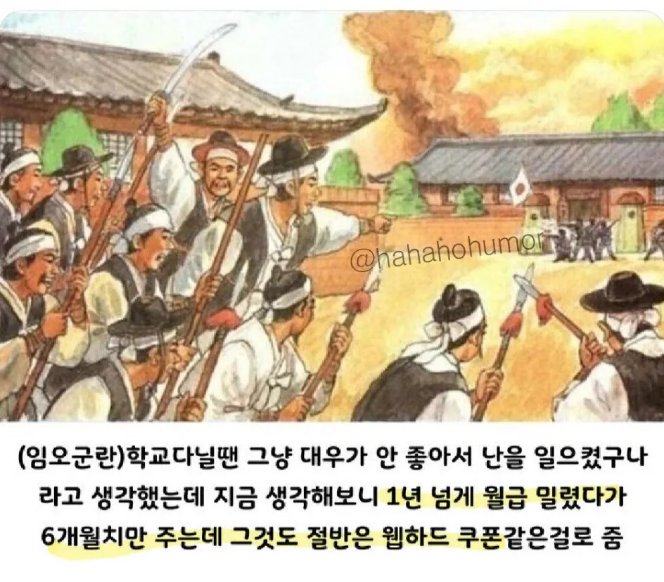

취업후에 비로소 이해된다는 역사적사건
댓글
대부분 처자식이 있었을텐데, 눈 안돌아가는게 이상하지
엠창련들이 내 밥줄을
그래놓고 사측에서 우리 몰아내겠다고 외국 용역깡패 불러놓고 우리한테 줄돈을 그대로 갖다받침
웹하드 쿠폰 ㅋㅋㅋㅋㅋㅋ
시대상 생각해보면 난이라도 일으킨게 다행이지
쟤들 저거 실패하면 단체로 군문효수 당해야하는 시대인데...
무게채우려고 쌀에 모래가 절반 섞여있어서 절반은 쿠폰으로 줬다기보다 그냥 안준거나 비슷한 상황임
뭐? 온디스크 파일누리 투디스크 쿠폰이라고?
심지어 진행과정도 정확히 민씨집안과 비리관료를 타겟팅해서 잘골라죽임
차라리 지금은 형편이 안되어서 나중에 줄게 하면 그나마 이해라도 했음
그렇게 미룬게 1년인거임
그거 이미 써먹고 쿠폰 나눠준거니 더 열받음
??? : 훈련도감은 12개월이나 월급이 밀려도 상관 없었다. 어차피 월급보다 부가수익이 많아서 월급이 안나와도 12개월을 버틴 것이다.
그들이 화난 건 모래 섞인 쌀을 줬다는 게 자존심 문제였기 때문이다.
어디에 나온 드립이더라…
급여로 개잡주 섞어준거네
임오군란이 발생한 결정적 원인은 구식 군인들에게 13개월동안 밀린 임금을 조미로 지급한 것이 관리관청인 선혜청 관리들의 농간으로 양은 절반도 안되고 썩거나 모래, 겨 등이 섞여 있었기 때문이었다. 구식 군인들이 이를 항의하자 선혜청 담당자는 새로 못 주겠으니까 받기 싫으면 가라는 식으로 군인들을 모욕하고 자극하자, 이에 분노한 군인들이 선혜청 관리들을 구타하였고 주변의 기물을 파손하는 등 난리를 부리면서 발생하였다.
이런 상황이 났는데도 선혜청 제조 민겸호는 사태의 원인을 알고 있었음에도 불구하고 주동자들을 구속해 버렸는데 사태의 책임자에게 조사관 직책을 맡겨 놓은데다 사태 수습은 커녕 주동자들을 투옥하고 매질을 하는 등 강경대응했고 이에 군인들의 분노가 폭발하면서 사건은 악화되었다.
구식 군인들과 이에 동조하던 백성들이 폭동에 가세하여 민겸호의 자택 및 포도청과 관가를 습격하여 갇힌 주동자들을 풀어주고 민겸호, 민태호 등 민씨 일가 친척과 개화파 인물들의 자택을 습격하고 파괴한다. 또한 궁궐로 진격하여 전 영의정 흥인군과 이조참의 겸 호군인 민창식의 집을 습격하여 현장에서 살해했고, 군인들에게 줄 쌀을 착복하고 오히려 군란 주동자들을 강경진압해서 임오군란의 원인을 제공했던 민겸호도 군인들과 백성들에게 잡혀 맞아죽었다.
경기도 관찰사 김보현도 살해당했으며, 그밖에 민씨 일가들이나 이들과 친하게 지냈던 사람들, 궁궐에 출입하던 점쟁이나 무당들 역시 잡혀 죽거나 집이 파괴되었다. 즉 시작은 군납 비리에 대한 항의부터 시작되었으나 당시 정권을 틀어쥐고 부패를 저지르던 민씨 일가에 대한 국민들의 쌓인 분노가 폭발한 것이라고 볼 수 있다. (사실 민씨 일가가 군납 비리의 원흉이기도 했고)
그것도 무기 들고 일하는애들한테 그따위짓함
배떄기 뚫려도 올게왔구나 해야지